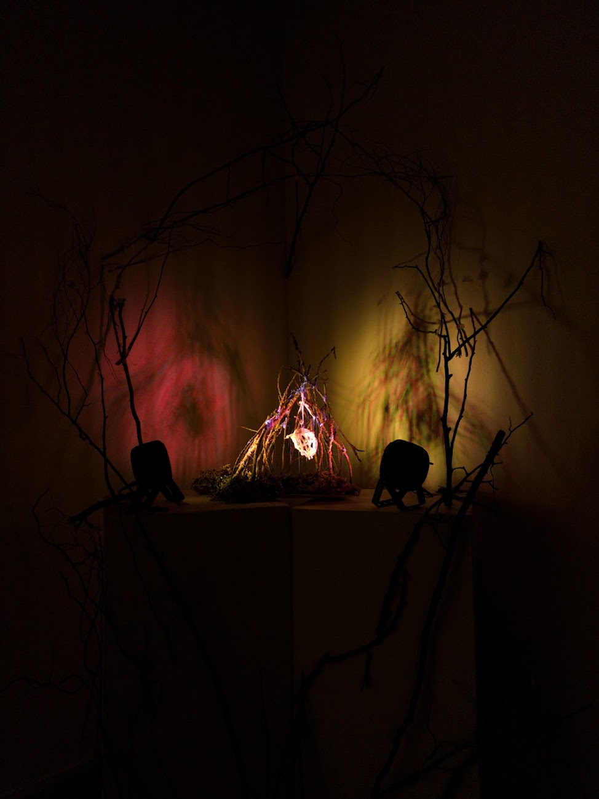
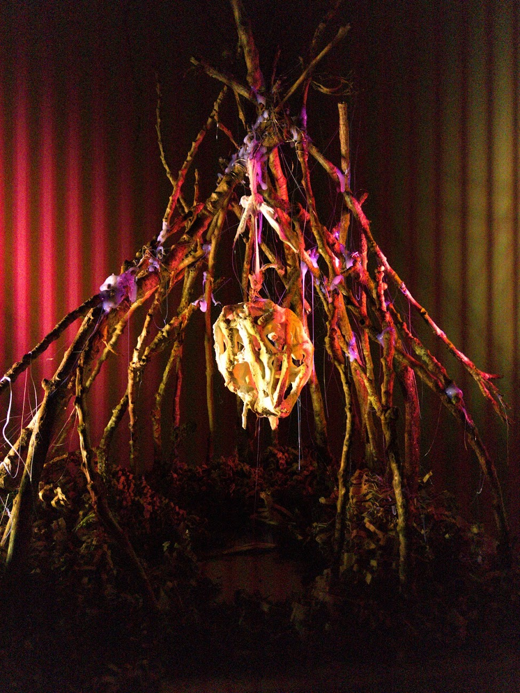
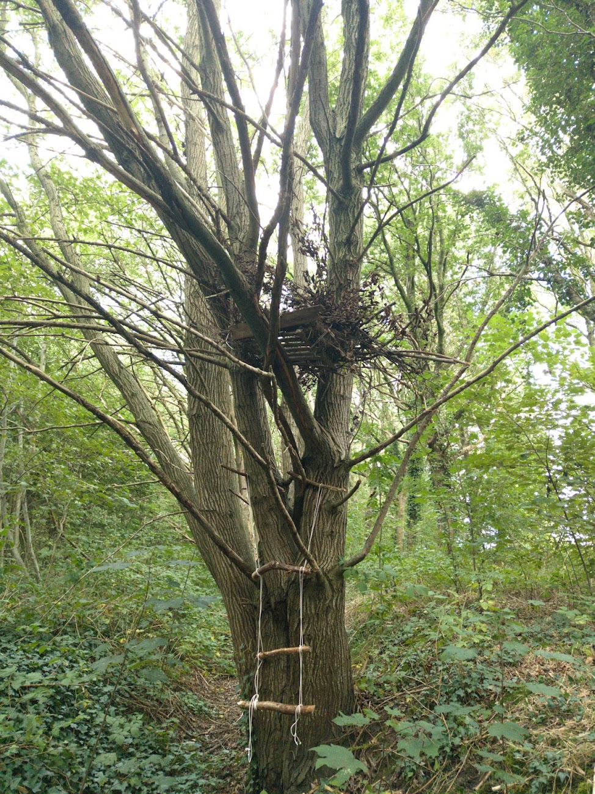

The scene is inspired by Romanian folklore, specifically by the “Iele”. They are fairy-like creatures that lure men into the forest with their songs and dances to kill them. However, the space has a double meaning. The organic-looking trees create a seemingly safe space, signalling how we try to take comfort in something dangerous. The performance itself is meant to express the cycle of suffering that we create for ourselves, inescapable and inexplicable. Music by In Good Spirit, who allowed me to use their audio stems. I worked with the stems to create the eerie intensity and feeling of the music.


Uprooted
This work depicts my own heart, cornered by worries deeply rooted within.
The light projections represent the many forms my stress can take, and the fact that it lingers
around any thought. Desperately seeking a way out, I still try to find comfort in it,as no matter what it's part of me.

False Safety
This installation explores the concept of security in relation to our physical and emotional environments. We often seek out the quickest solution, but that doesn't mean it's the best one in the long run. Therefore, if a door closes, we go through the window. We must persevere through the tough times in order to achieve what we need. It can become treacherous, but we still crave security, no matter the danger